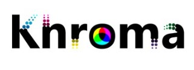
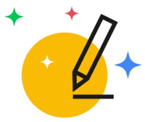

Key AI Tools for Image Design
Adobe Firefly:
https://firefly.adobe.com
Adobe Firefly, part of Adobe Creative Cloud, is a generative AI tool developed by Adobe for image design
and creative tasks. It represents an evolution of Adobe's technology, leveraging the company's four
decades of experience in empowering users to bring their ideas to life.
One of the key features of Firefly is its ability to translate text and other inputs into a range of
creative outputs, not just static images. This includes videos, documents, and digital experiences, in
addition to images and art. Firefly is designed to be commercially safe, being trained on licensed
content like Adobe Stock and public domain content. Adobe, as a founding collaborator of the Content
Authenticity Initiative, is setting standards for responsible generative AI use.
Firefly's integration into Adobe Creative Cloud enhances its utility, making features powered by Firefly
available in apps like Photoshop, Illustrator, Adobe Express, and Adobe Stock. The tool supports over
100 languages for text prompt inputs, using machine translation to English provided by Microsoft
Translator. Firefly for Enterprise was released in June 2023, expanding its application in professional
settings.
Adobe Firefly also offers various modes:
Generative Fill: Allows users to change elements in an image, such as the
background,
colors, or adding elements.
Text Effects: Enables the creation of texts with a generative fill according to a
prompt.
Generative Recolor: Lets users change colors of vector images, testing different
variations.
3D to Image: Transforms 3D elements into a 2D image, offering unique perspective
and
creative possibilities.
Extend Image: This mode extends an image, creating a continuation of it.
Adobe Firefly's design philosophy revolves around enhancing creativity and making the design process
more accessible and efficient for both professionals and enthusiasts in design and visual arts
Midjourney:
https://www.midjourney.com
Midjourney is a renowned AI tool for image design, leveraging generative AI to create realistic,
custom
images from textual prompts. Notably recognized for its impressive outcomes and intuitive
interface,
Midjourney stands out among AI image generators. Its features and benefits include:
Advanced Generative AI: At its core, Midjourney utilizes cutting-edge
generative AI technology to create highly detailed and customized images from text prompts.
This allows for
the creation of varied visual content, ranging from realistic scenes to abstract art,
catering to
diverse design needs.
User-Friendly Interface: Despite its sophisticated backend, Midjourney
boasts
a
user-friendly interface that simplifies the image creation process. Users, regardless of
their
technical
expertise, can easily navigate and utilize the tool to transform their ideas into visual
representations
efficiently.
High Customization Capability: Midjourney stands out for its extensive
customization
options. Designers can fine-tune their outputs by adjusting various parameters, enabling
them to
create
unique images that align closely with their specific vision and requirements. This feature
is
particularly beneficial for projects that require a distinct aesthetic or thematic
consistency.
Bing Image Creator:
https://www.bing.com/images/create
Bing Image Creator, developed by Microsoft, is an innovative AI tool that seamlessly blends with Bing's
search engine to generate images from textual descriptions. It excels in understanding natural language,
enabling users to effortlessly create diverse visual content. This tool caters to both casual and
professional needs, offering a wide range of creative possibilities. Bing Image Creator, Microsoft's
entry into the AI-generated imagery arena, exhibits several notable features as below:
Integration with Bing Search: A key feature of Bing Image Creator is its seamless
integration with Bing's search engine. This allows users to generate images directly from the search
interface, providing a convenient and efficient way to visualize concepts found during online
searches.
Natural Language Understanding: The tool is adept at interpreting natural
language
inputs, enabling users to create images by simply describing their ideas in words. This advanced
understanding enhances the tool's accessibility and ease of use for a wide range of users,
regardless of
their technical background.
Diverse Creative Options: Bing Image Creator offers a broad spectrum of creative
possibilities, allowing users to generate a wide range of images, from realistic photos to artistic
illustrations. This flexibility makes it suitable for various applications, from casual creative
exploration to more professional design tasks.
Khroma:
https://www.khroma.co/
Khroma is an AI-driven tool designed for color exploration and palette creation. Utilizing machine

learning, it learns from individual user preferences to generate harmonious color combinations. This
tool is invaluable for designers and artists, offering a personalized approach to color selection, thus
enhancing the aesthetic appeal of their projects.
Khroma stands out with its unique features:
AI-Powered Learning Algorithm: Khroma uses an advanced AI algorithm that learns
from
users' color choices. Over time, it tailors its suggestions to align with individual preferences,
ensuring highly personalized color palette recommendations.
Extensive Color Library: Khroma boasts a vast library of colors, providing users
with
an unparalleled range of hues and shades. This extensive collection enables users to explore and
experiment with a diverse array of color combinations, fostering creativity and innovation in
design.
Interactive User Interface: The tool features an intuitive and interactive
interface,
allowing users to easily select and combine colors. This user-friendly design simplifies the process
of
finding the perfect palette, making Khroma accessible to both professional designers and hobbyists
alike.
AutoDraw:
https://www.autodraw.com/
AutoDraw, a unique web-based tool, harnesses AI to transform rough sketches into polished illustrations.

It intelligently recognizes hand-drawn shapes and suggests professionally designed counterparts, making
it ideal for users seeking quick, clean graphics without needing advanced drawing skills. This tool
democratizes graphic design, making it accessible and fun for everyone.
AutoDraw offers several distinctive features:
Ease of Use for All Skill Levels:
Designed for accessibility, AutoDraw is
user-friendly, catering to users of all skill levels. Whether you are a seasoned artist or a
beginner,
the tool's intuitive interface makes creating clean and appealing drawings straightforward and
enjoyable.
Wide Range of Pre-Drawn Illustrations:
The tool includes an extensive library
of
pre-drawn illustrations. This vast collection allows users to easily find and use a variety of
drawings,
enhancing their projects without needing advanced drawing skills.
Cross-Platform Compatibility:
AutoDraw is web-based and cross-platform
compatible, meaning it can be used on various devices such as smartphones, tablets, and computers.
This
flexibility ensures that users can access and use the tool wherever they are, with whatever device
they
have at hand.